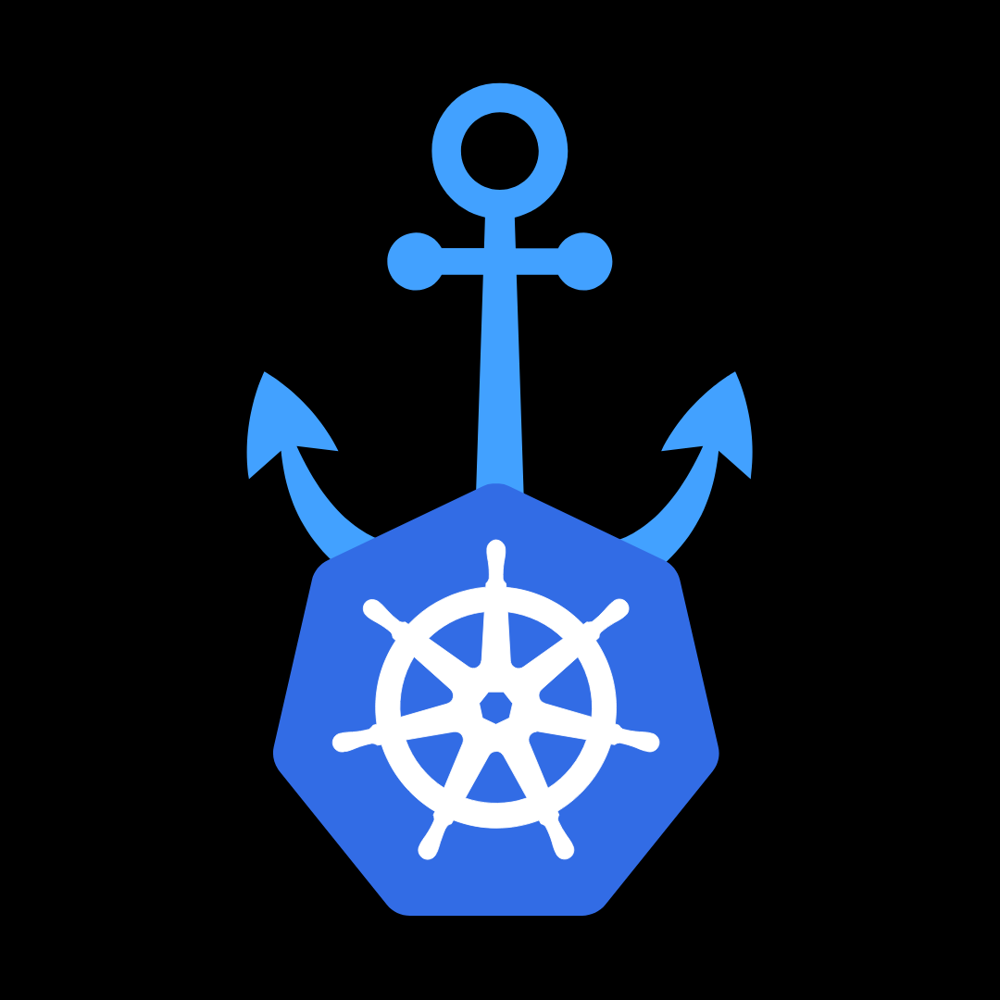

Surviving Webhook-Driven Chrome Browser Sessions in K8s

In distributed testing environments, "browser-farms" running on Google Kubernetes Engine (GKE) are critical for parallel execution. These farms host Chrome headless pods exposing the Chrome DevTools Protocol (CDP) for automation.
However, a critical architectural challenge arises when the Executor service attempts to attach to specific Chrome sessions via WebSocket (WSS).
Standard Kubernetes load balancing is stateless, causing Executors to connect to the wrong pod. While standard Ingress solutions usually solve this via session affinity, specific limitations within GKE and the application architecture rendered them unviable. This article details the failure of standard Ingress strategies and the implementation of a robust Pod-to-Pod solution using dynamic IP injection.
Standard Kubernetes load balancing is stateless, causing Executors to connect to the wrong pod. While standard Ingress solutions usually solve this via session affinity, specific limitations within GKE and the application architecture rendered them unviable. This article details the failure of standard Ingress strategies and the implementation of a robust Pod-to-Pod solution using dynamic IP injection.
Quick links
The Problem: The "Localhost" Trap
The browser-farm architecture consists of multiple replicas of a Pod running:
- Google Chrome (Headless): Listening on port 9222.
- NGINX: Acting as a reverse proxy.
- Executor Service: The client attempting to control the browser.
The Failure Workflow
When Chrome starts a session, it advertises a connection URL bound to its local loopback interface:
"webSocketDebuggerUrl": "ws://localhost:9222/devtools/page/<session_id>"
When the Executor attempts to connect using the Kubernetes Service (e.g., ws://browser-farm-service:9222/...), the Round-Robin algorithm routes the handshake to any available pod. If the request lands on a pod different from the one that created the session, the target pod rejects the unknown Session ID, causing Session not found errors.
"webSocketDebuggerUrl": "ws://localhost:9222/devtools/page/<session_id>"
When the Executor attempts to connect using the Kubernetes Service (e.g., ws://browser-farm-service:9222/...), the Round-Robin algorithm routes the handshake to any available pod. If the request lands on a pod different from the one that created the session, the target pod rejects the unknown Session ID, causing Session not found errors.
Why Standard Ingress Solutions Failed
Before developing a custom solution, we evaluated standard Kubernetes Ingress strategies to handle session affinity (stickiness). Both major options were disqualified due to technical constraints.
- A. Google Cloud (GCE) Ingress: The native GKE Ingress controller was the first candidate. However, it was ruled out because:
- Affinity Limitations: GCE Ingress only supports Cookie-based or ClientIP-based affinity. It lacks support for arbitrary Header-based affinity. The google document says “You can use a BackendConfig to set session affinity to client IP or generated cookie.”
- Application Incompatibility: The Executor service is a programmatic client, not a standard web browser. Adapting the client to manage and persist Ingress-generated cookies was not feasible. Furthermore, relying on ClientIP hashing was deemed unreliable due to the dynamic network nature of the internal cluster traffic.
- B. NGINX Ingress Controller We subsequently attempted to deploy the community NGINX Ingress Controller, which supports sophisticated header-based routing (e.g., routing based on a Session-ID header).
- Security Constraints: The deployment failed due to strict RBAC (Role-Based Access Control) policies within the cluster.
- Access Denial: The Kubernetes cluster denied the specific ClusterRole permissions required for the NGINX controller to operate effectively. We were unable to override or "force" these permissions due to organizational security governance.
The Solution: Dynamic Pod-IP Injection
To guarantee the WebSocket request reaches the correct instance without an Ingress middleman, we altered the "advertisement." Instead of returning localhost, the pod now returns its own Pod IP or FQDN.
This approach requires two changes:
This approach requires two changes:
- Infrastructure: Injecting Pod Metadata into the container environment.
- Runtime: Scripting a dynamic rewrite of the Chrome JSON response.
Step 1: Injecting Pod Metadata
We utilize the Kubernetes Downward API to expose the Pod's IP as an environment variable.
Update kubernetes/deployment.yaml:
Update kubernetes/deployment.yaml:
containers:
- name: browser-farm
env:
- name: POD_IP
valueFrom:
fieldRef:
fieldPath: status.podIP
- name: POD_NAME
valueFrom:
fieldRef:
fieldPath: metadata.name
- name: POD_NAMESPACE
valueFrom:
fieldRef:
fieldPath: metadata.namespace
Step 2: The Node.js Rewriter Script
Instead of relying on fragile shell scripts (sed), we deployed a robust Node.js script. This script polls the local Chrome instance, parses the JSON safely, injects the POD_IP, and exposes the corrected list.
Verification:
Exec into a running pod to ensure the webSocketDebuggerUrl is rewriting correctly:
Expected Output:
Verification:
Exec into a running pod to ensure the webSocketDebuggerUrl is rewriting correctly:
kubectl exec -it <browser-farm-pod> -- curl -s http://localhost:9222/json/list
Expected Output:
"webSocketDebuggerUrl": "ws://10.4.1.17:9222/devtools/page/1234-5678-ABCD"
Results and Benefit
By bypassing the limitations of GCE Ingress and the security restrictions of NGINX Ingress, we achieved:
- 100% Session Affinity: Executors connect directly to the specific pod IP, eliminating routing guesswork.
- Simplified Networking: Traffic stays within the cluster VPC, reducing latency compared to hair-pinning through an external Load Balancer.
- Compatibility: This method works regardless of Ingress limitations or restricted RBAC policies, making it highly portable across different GKE security postures.
Statefulness inside a inherently stateless orchestration platform like Kubernetes often forces architects into a corner. While Ingress controllers and service meshes are usually the go-to answer for session affinity, real-world enterprise environments come with security guardrails and managed platform trade-offs.
Solving the Chrome DevTools Protocol routing issue at the pod level proved that shifting the responsibility of "identity advertisement" to the application container itself can be far cleaner, more secure, and significantly more portable across GKE clusters.
You may look into these documentations to understand the challenge and the resone behind the descision making "Disadvatage of Nginx snippet controller" and Implementing Cookie and ClientIp session affinity
© Copyright 2024. All right Reserved.